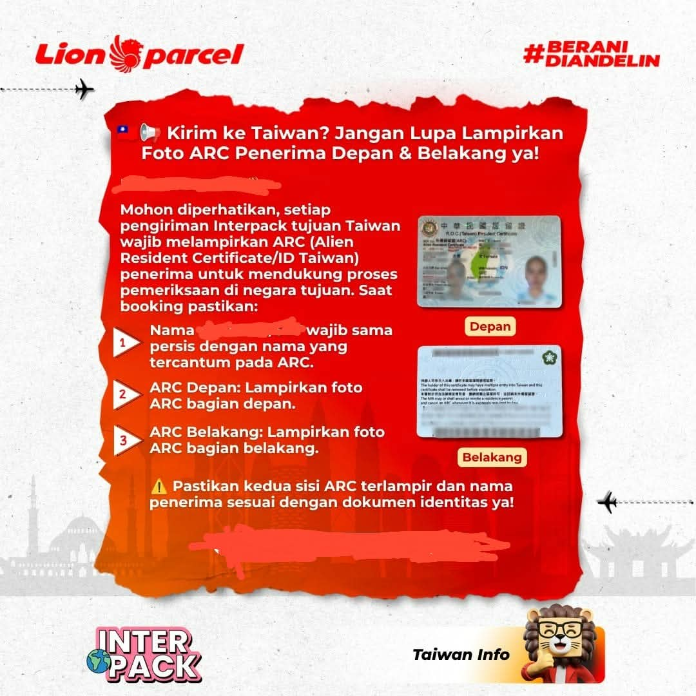

Syarat Kirim Paket ke Taiwan: Jangan Lupa Foto ARC Penerima!

Berencana mengirim paket ke Taiwan menggunakan layanan Interpack Lion Parcel? Ada satu dokumen penting yang perlu disiapkan sebelum melakukan pengiriman, yaitu foto ARC (Alien Resident Certificate) milik penerima di Taiwan.
Berdasarkan ketentuan pengiriman yang diinformasikan kepada gerai kami, pengirim perlu melampirkan foto ARC bagian depan dan belakang. Karena itu, sebaiknya dokumen tersebut disiapkan terlebih dahulu agar proses administrasi pengiriman dapat berjalan lebih lancar.
Konsultasi Kirim Paket ke Taiwan
Masih bingung mengenai persyaratan dokumen, jenis barang, atau prosedur pengiriman Interpack ke Taiwan? Silakan konsultasikan terlebih dahulu dengan admin kami.
💬 Chat WhatsApp 0851-8309-04861. Apa Itu ARC (Alien Resident Certificate)?
ARC merupakan singkatan dari Alien Resident Certificate, yaitu kartu izin tinggal bagi warga negara asing yang memenuhi ketentuan keimigrasian Taiwan.
Dalam proses pengiriman paket internasional ke Taiwan, dokumen identitas penerima dapat diperlukan untuk mendukung pemeriksaan administrasi dan kepabeanan di negara tujuan. Oleh sebab itu, pastikan informasi penerima sesuai dengan dokumen identitas yang diminta.
2. Dokumen ARC yang Wajib Disiapkan
Sebelum melakukan pengiriman Interpack tujuan Taiwan, pastikan pengirim sudah meminta dokumen ARC dari penerima. Perhatikan beberapa ketentuan berikut:
- Foto ARC bagian depan: Siapkan foto sisi depan kartu ARC dengan tulisan dan informasi identitas yang terlihat jelas.
- Foto ARC bagian belakang: Lampirkan juga foto sisi belakang kartu ARC secara utuh dan tidak terpotong.
- Kesesuaian nama penerima: Pastikan nama penerima pada data pengiriman sesuai dengan identitas yang tercantum pada dokumen ARC.
- Kualitas foto: Gunakan foto asli yang jelas, tidak buram, tidak silau, dan seluruh bagian kartu terlihat.
Sebaiknya konfirmasikan kembali dokumen yang diperlukan kepada petugas sebelum paket dikirim, karena persyaratan administrasi dapat mengikuti ketentuan layanan dan negara tujuan.
📍 Lokasi Lion Parcel Bandung POS101 Nanjungmekar
Jl. Raya Barat Cicalengka RT 1 RW 1, Nanjung Mekar, Rancaekek, Kabupaten Bandung, Jawa Barat.
3. Tips Agar Pengiriman Paket ke Taiwan Lebih Lancar
Selain menyiapkan foto ARC, ada beberapa hal yang sebaiknya diperhatikan sebelum mengirim paket internasional.
- Pastikan nama dan alamat penerima di Taiwan ditulis secara lengkap dan benar.
- Cantumkan nomor telepon penerima yang masih aktif.
- Siapkan foto ARC bagian depan dan belakang sesuai ketentuan yang diminta.
- Informasikan jenis, jumlah, dan isi barang secara jujur saat proses pengiriman.
- Gunakan kemasan yang sesuai dengan karakteristik barang agar lebih terlindungi selama perjalanan.
- Tanyakan terlebih dahulu mengenai barang yang boleh dan tidak boleh dikirim ke Taiwan.
Perlu diingat, kelengkapan dokumen tidak otomatis menjamin paket bebas pemeriksaan atau pasti lolos bea cukai. Pengiriman tetap mengikuti ketentuan maskapai, layanan ekspedisi, dan peraturan negara tujuan.
4. Kirim Paket Interpack ke Taiwan dari Rancaekek dan Bandung
Bagi masyarakat yang tinggal di Rancaekek, Cicalengka, Nanjungmekar, dan wilayah sekitarnya, pengiriman paket internasional dapat dikonsultasikan melalui Lion Parcel Bandung POS101 Nanjungmekar.
Kami siap membantu memberikan informasi mengenai prosedur pengiriman Interpack, kelengkapan dokumen penerima, pengecekan jenis barang, serta proses administrasi sebelum paket diberangkatkan.
Sebelum datang ke gerai, Anda juga dapat menghubungi admin melalui WhatsApp untuk memastikan persyaratan dan informasi layanan terbaru.
Kesimpulan
Salah satu persyaratan penting pengiriman paket Interpack Lion Parcel tujuan Taiwan adalah menyiapkan foto ARC (Alien Resident Certificate) penerima bagian depan dan belakang, serta memastikan nama penerima sesuai dengan identitas yang digunakan.
Dengan mempersiapkan dokumen sejak awal dan mengonfirmasi persyaratan kepada petugas, proses administrasi pengiriman diharapkan dapat berjalan lebih lancar.
Jika Anda berencana mengirim paket ke Taiwan dari wilayah Bandung dan sekitarnya, silakan hubungi Lion Parcel Bandung POS101 Nanjungmekar untuk mendapatkan informasi lebih lanjut.
Informasi Lion Parcel Bandung POS101
Nama Agen: Lion Parcel Bandung POS101 Nanjungmekar Rancaekek
Jam Operasional: Senin–Minggu, 08.00–20.00 WIB
Alamat: Jl. Raya Barat Cicalengka RT 1 RW 1, Nanjung Mekar, Rancaekek, Kabupaten Bandung, Jawa Barat.
WhatsApp: 0851-8309-0486